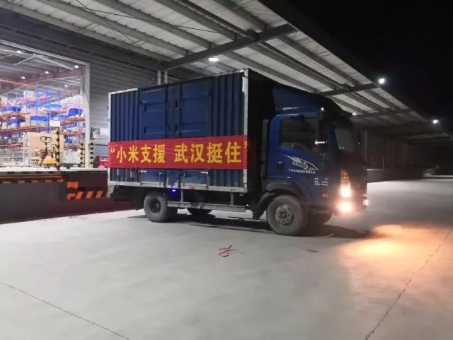

孝感前线医生：武汉更难，我们下面不好意思提要求
原文链接 备份链接 武安医生（化名）所在的医院是孝感市三家抗疫医院之一。距离武汉66公里的孝感是距离武汉最近的地级市，截止到1月28日上午，有确诊病例173例。与暴风眼武汉一样，以孝感为代表的武汉周边小城也正在经历着决战时刻。 坐诊之 …


来源：腾讯新闻《潜望》 栏目
作者：王潘
2020年元旦前后，武汉新型肺炎的新闻曝光，小米区域拓展部副总裁、武汉总部总经理刘国俊要求团队尽快备好口罩、药物和体温测量仪等可能有助于武汉当地员工防御病毒的措施。
“原本小米武汉公司内部的消毒工作，也变得比以往的频次更高了。”刘国俊告诉腾讯《潜望》。小米武汉总部对这家公司十分重要，这里有将近1500名员工，员工数仅次于小米集团北京总部。
1月18日，刘国俊感到事态有些严重，于是向小米集团总部报备，并获得同意，让小米武汉部分想早些休假的员工提前离开了公司。
1月20日晚，国家卫健委高级别专家组组长钟南山表示，可以肯定，此次新型冠状病毒感染的肺炎，存在人传人的现象。刘国俊感到事态严重性超出了原本的预期。
其实当天上午，刘国俊已召开紧急会议，对小米武汉员工提前放假，封闭办公区，客服全部回家办公，少数必要留守员工要求每天检查体温并做记录。“我们首先要做的是加强防控、稳定人心，严防死守，确保员工安全。”刘国俊说。
刘国俊告诉腾讯《潜望》，由于当时武汉的情况已经很严峻，但是部分员工不愿意提前离开，于是团队不得不下达最后的“通牒”，告诉不愿离开的员工，公司即将停水停电，到时室内将没有暖气，才将这些人“赶走”。
与此同时，刘国俊让团队提前购置口罩、体温计等物品，以便春节开工上班以后全员可以使用。但刘国俊当时没有想到，武汉竟然很快就封城了。
不过，放假之后的刘国俊却比平时更忙，因为他还有另外一件紧急而重要的事要做。

紧急驰援武汉
“我们一定要尽自己的所能，尽快为武汉防疫提供物资”，得知疫情的严重性以后，雷军对同事们说。
这位毕业于武汉大学的湖北企业家迅速拍板：小米要真心实意帮助武汉人民，在第一阶段筹措超过300万元物资基础上，迅速追加1000万元资金援助。
1月22日，小米有品负责人高自光与质量服务部同事闫明辉等人商量，为武汉抗击疫情做点什么。小米有品是小米集团旗下的电子商务公司。
很快，小米基金会秘书长魏来找到小米有品团队，表示小米基金会也希望此次为武汉进行紧急捐赠。双方一拍即合，为了协调更多资源，有品团队负责平台已有商品的捐赠，魏来负责统筹协调其他物资以及安排物流配送问题。
雷军是湖北仙桃人，与武汉有着千丝万缕的联系，他曾在武汉大学就读，并且将金山、顺为等企业都带到武汉设立办公室，私人关系上他的众多亲友都在武汉，在湖北。此次疫情暴发后，雷军大量转发微博，希望武汉挺住，并且安排相关下属在第一时间进行支援。

捐出所有在售口罩、体温计
由于本次武汉室内各大医院急需口罩等医疗物资，小米内部讨论决定，将小米有品库存所有医疗用品尽快捐赠到武汉。
小米有品是小米产品品类最全的电商部门。22日，小米有品质量服务部闫明辉联系小米区域拓展部副总裁、武汉总部总经理刘国俊，希望向武汉捐赠物资。
闫明辉告诉腾讯《潜望》，最早小米有品内部还在考虑是否留出部分库存医疗物资，以供捐给武汉以外的其他地区网友购买，但是当时考虑到武汉是最紧急的，于是团队决定将所有物资都捐往武汉。
经过一上午的核实，有品拥有武汉一线所需的各类产品共1万7千多件。库存量看起来并不高，这是因为口罩和温度计在平时并不是热销商品，谁也没有料到疫情产生的需求爆发。
自1月23日起，雷军的个人微博下方就有不少网友评论称，为何小米商城和小米有品买不到口罩了，雷军未做回应，但实际上，这些口罩都是捐往疫情最严重的武汉了。
小米有品内部技术人员很快将线上在售的口罩、体温计等商品全部下架，除了顾客已经下单的订单需要留出商品完成发货以外，其他全部货品将被捐往武汉。
与此同时，魏来又从其他渠道调配物资，准备紧急发往武汉。魏来联系到河南新乡一家工厂，紧急调来一批口罩。
除去已售出的货物，小米还调集了1万3件各类物资。同一时间，小米生态链企业iHealth(九安医疗)也告知小米，其在天津的库房有一大批温度计可供捐赠。最终，小米将从全国六大仓库向武汉发去第一批捐赠物资。

遭遇物流难题
23日下午，小米中国区物流部总经理孙波接到了小米基金会秘书长魏来的电话。魏来告诉他，现在有品和生态链企业将从全国调集物资运送到武汉去，对于物流合作孙波更有经验，希望他来跟进。
孙波是湖北十偃人，这个春节父母在老家，岳父岳母在武汉，由于疫情他不能回家过年了，却始终都在关心家乡。接到公司的需求，他立刻联系了有品的同事，确认与物流承运商的运送计划。
小米有品在全国共有5个大仓，分别是河北廊坊、湖北鄂州、四川成都、浙江嘉兴和广东清远。加上iHealth(九安医疗)在天津的库房，一共6分出发地。
基于如此分散的情况，空运是不可能的。而且小米行动之时，各物流承运商还没有开启任何绿色通道，按平时的物流规则，空运要提前一周报备。要最快抵达武汉，只有走公路运输。
在这个过程中，小米又遭遇了两个困难，一是临近除夕，二是武汉已经封城了，没有司机愿意去武汉。“司机不全是怕去武汉，更多是怕去了出不来，没法回家过节了。”孙波说，小米和承运商商量，不计一切代价，提供奖励金，希望找到在非常时期勇于奉献的司机。
为了尽快将物资送达武汉，在湖北省仙桃市政府的帮助下，小米物流在仙桃找到一个临时仓库作为物资中转站，小米将全国六大仓库调拨的物资进行汇总，然后再由武汉内部车辆前往仙桃将物资运回。
这一中转方案很快获得了承运商顺丰速运的认可。孙波和同事开始逐个跟进全国六大仓的货运车辆。最远的广东清运率先安排好了车辆，接着是成都，嘉兴，廊坊、天津、鄂州。1月24日凌晨1点半，成都、嘉兴、清远相继发车，早上天津、廊坊、鄂州也出发了。
24日，第一车物资抵达仙桃。这一天也是除夕，孙波和同事们仍然在紧张地跟进物流状况，春晚一眼也没顾得上看。北京女孩南方是有品仓库运营负责人，奶奶家的团年饭，她只顾得上吃了15分钟，就又回到屋子里忙活了起来。
当零点钟声快要响起，孙波在朋友圈发了一张“逆行者”：“这是我很敬佩的一张图，希望更多人在任何危机时刻，都能成为逆行者，包括我自己。”

首批应急物资送达武汉
大年初一（1月25日）中午，小米集团首批救助新型肺炎的应急物资送达武汉，包括N95口罩、医疗口罩和各类体温计。这也是新型肺炎疫情发生后，首批抵达武汉的应急物资。
初一中午，在仙桃的箱货开始向武汉发送，三个年轻人于春风、解丹和张德坤将协助物资运送到了武汉市疫情防控指挥部。下午14：30分，小米捐赠的物资顺利抵达。
紧接着，于春风和同事又将35支体温检测仪运送到了雷神山医院工地。由于实行了封城，武汉的街道上基本没有车辆，而店铺也纷纷关闭。于春风一整天没有吃饭：“忙起来顾不上，而且也没地方能吃上两口。”
据悉，此次驰援湖北灾区，小米充分发挥了自身物流、仓储的综合优势，第一时间将亟需物资送达疫情所在城市。在小米集团的综合赋能下，各个生态链企业也积极响应。据了解，小米生态链企业紫米科技、紫米科技、8H、小吉科技、造梦者、九号机器人、九安医疗等企业捐赠了大批物资和资金。
从正月初一开始，小米应急管理小组又开始忙着统筹安排新的应急物资，这些物资不仅仅包括小米后续捐赠的，也有外部组织捐赠的。
由于小米迅速地将物资运抵了武汉，众多向武汉捐赠物资的组织找到小米希望其帮忙，小米协助武大校友会捐赠的1600套防护服、王一博粉丝会捐赠的500个防护面罩、以及小米生态链公司的各类物资陆续进入武汉城区。
就在小米首批救援物资送达武汉的第二天，雷军公开发文说，感谢合作伙伴和员工牺牲春节假期将应急物资送到武汉，小米将尽一切所能，在保障安全和客观条件允许的前提下，继续为武汉地区用户提供服务。
就在这一天，1月26日，小米集团宣布所有湖北用户都可以在小米有品App以一分钱领取有品“湖北专区”防护品，包括秒秒测酒精消毒片和次氯酸钠消毒剂。这也是小米支持湖北疫情的诸多行动之一。小米集团已经承诺，除超三百万元物资外，将持续捐款1000万元。
武汉之外的捐赠
1月28日凌晨两点，小米捐赠的救灾物资顺利抵达湖北省仙桃市第一人民医院，第一波率先送到仙桃的物资主要为目前亟需的隔离防护服和N95口罩。5个小时后，大批同样的物资也送达荆门市卫生健康委员会。
荆州、黄冈、孝感的医院和卫健委也在当天陆续收到了小米集团捐赠的医疗物资，这也是湖北省内除武汉之外的疫情城市最早接收到的来自互联网公司的捐赠之一。
刘国俊介绍说：在1月25日大年初一完成首批应急物资运送武汉后，小米集团马不停蹄地准备后续物资的捐赠。第二天，小米向武汉市第三医院捐赠对讲机，向北京协和医院救助分队捐赠行李箱及一批水溶性胶带，向武汉大学中南医院捐赠2万个口罩和5万双手套。
此次驰援湖北灾区，小米发挥了自身物流、仓储优势，第一时间将亟需物资送达疫情所在城市。在小米集团的赋能下，各个生态链企业也响应。据了解，小米生态链企业紫米科技、智米科技、8H、小吉科技、造梦者、九号机器人、九安医疗等企业捐赠了大批物资和资金。
小米生态链公司除了捐赠疫区急需的防护物资，如口罩、手套和防护服，还发挥自身特有的品类优势，捐赠了符合疫区需要的生活用品。如8H、小吉科技共捐赠400套抗菌床垫，造梦者捐赠200台除菌空气净化器，部分物资已运抵湖北。

点击图片阅读更多


点击在看，即刻变好看

原文链接 备份链接 武安医生（化名）所在的医院是孝感市三家抗疫医院之一。距离武汉66公里的孝感是距离武汉最近的地级市，截止到1月28日上午，有确诊病例173例。与暴风眼武汉一样，以孝感为代表的武汉周边小城也正在经历着决战时刻。 坐诊之 …
原文链接 备份链接 在这场抗击新病毒的战争中，一线医护人员不得不为自身防护揪心，他们和医院、捐赠人一起被迫卷入一场医疗物资的募捐赛 文 |《财经》记者王丽娜 辛颖 编辑 | 王小 这是历次疫情中，一线医院大批量第一次直接向公众募捐，也是 …
原文链接 备份链接 新型冠状病毒疫情像是一场突如其来的阴霾，在这个冬天笼罩了华中大地。相较于最受关注的武汉市民，周边城市的人们，像是处在阴霾边缘，遭受侵袭，却又不常被看见。面对重重困难，孝感、黄冈、黄石、信阳、荆州、天门……各个城市的百姓 …
原文链接 备份链接 《人物》记者向多位寻求捐赠的医护人员咨询，他们均表示，很多医院的医用外科口罩库存量大概在一个星期左右，「平常有时口罩也戴一天，如果不去视察病房，有的科室没有戴口罩的需求。」用得不多、存量少，脆弱的库存和供应系统很快被疫 …
原文链接 备份链接 自新型肺炎疫情爆发以来，湖北乃至全国多个省份的医院因防疫物资短缺，向社会发出求助。而另一种声音却在说防疫物资是充足的，没有短缺。一时之间，防疫物资成为了薛定谔的猫。 今日来信的这位作者，便是自发为一线医院筹集防疫物资的 …